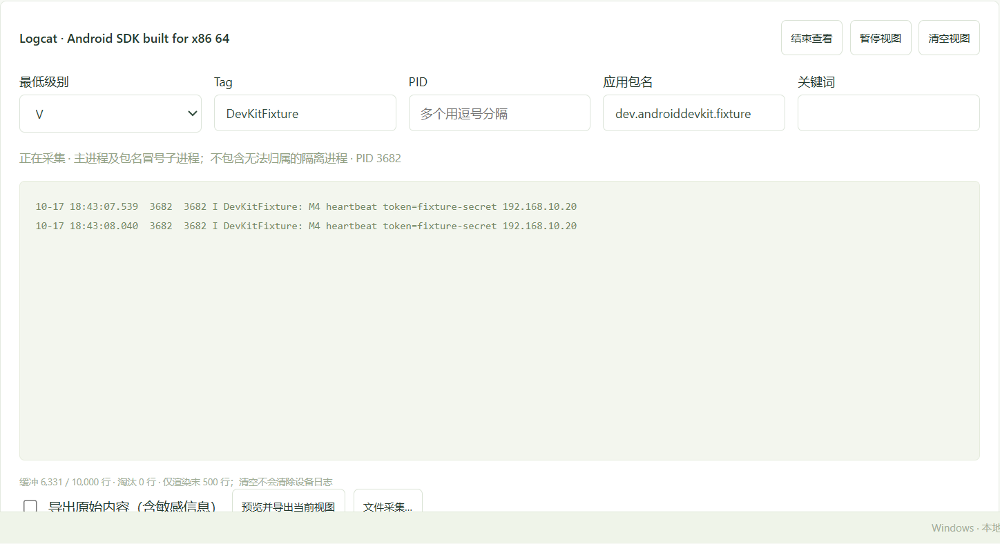
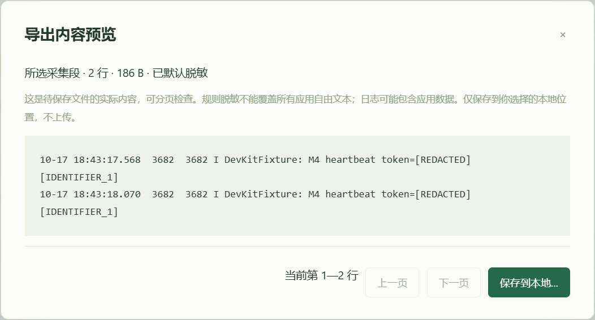
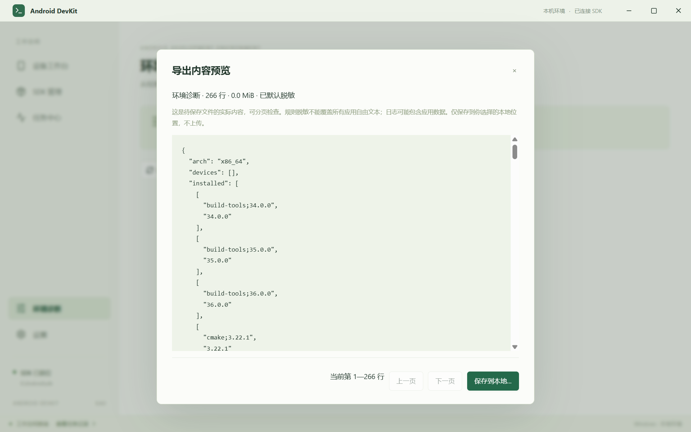
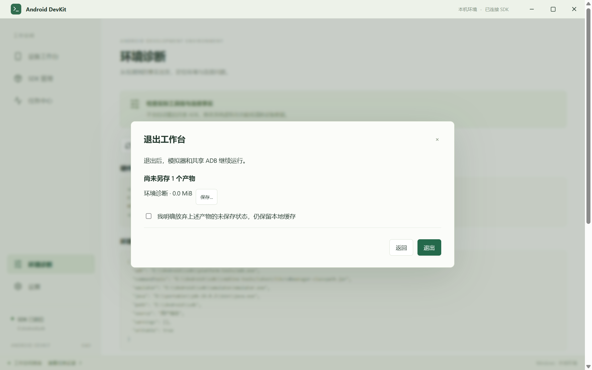

M4 核心功能与内部验收
版本 0.4.0 · Windows 11 x64 · 默认使用 E:\Android\sdk
本轮功能已落地 Release 与 NSIS 已构建 M4 全量验收未封板
2026-10-18 06:38:45 +08:00 · 北京时间在 M3 交付 基础上，按 技术方案 继续实现日志、导出、退出 / 托盘与恢复能力。当前交付可运行的内部验收版本；实体设备、长期压力、完整故障矩阵和签名发布仍需追加证据。
1. 本轮完成的功能
| 领域 | 最终行为 |
|---|---|
| Logcat 与应用过滤 | 解析 threadtime 的时间、PID、TID、级别、Tag、正文；支持级别、Tag、关键词、PID 和应用包名过滤。每 2 秒刷新主进程与冒号子进程集合；进程变化写入采集段 / 缺口提示，不将等待进程伪装为没有日志。 |
| 缓冲与视图 | 10,000 行 / 8 MiB 原始文本上限，单行有界；只渲染末 500 行。暂停只冻结视图，清空建立序号游标，不执行 logcat -c；恢复显示缓冲淘汰缺口。 |
| 文件采集 | 独立持久任务，切页继续；总配额 8～4096 MiB、时限 1～86400 秒，每段最多 100 MiB。达到配额 / 时限或主动停止后封口、校验并保存清单；连接、进程变化、缓冲超限和磁盘问题保留缺口。 |
| 导出与隐私 | 当前过滤范围、所选采集段、环境诊断分别准备。默认替换用户目录、设备标识、IP 和常见秘密字段；实际输出按 300 行分页预览。原始内容须明确选择。单次导出最多 64 MiB，超限标记截断，可分批选择。 |
| 产物与退出 | SQLite 保存未另存产物。保存先写临时文件并核对内容，再提交到选择位置；失败不标成功。无任务 / 未保存产物时正常退出，否则统一提示。明确放弃只绑定当前展示的产物 ID；收尾产生新截图时再次提示。 |
| 托盘与调度 | 托盘默认关闭，显式启用后关闭窗口隐藏；可恢复窗口或走统一退出。菜单 / 提示显示任务数与需检查数。不同设备写任务最多 2 个；同目标互斥，停止模拟器先处理在途写入与采集。导航无障碍名称不随任务徽标变化。 |
| 迁移与恢复 | v1 → v2 升级前生成 VACUUM 数据库备份；枚举全部在途 / 待检查任务，不受最近 200 条历史上限影响。中断采集保留并封口已有字节，不重放任务；AVD 提交恢复复核任务归属与配置根目录。 |

2. 已执行验证与结果
| 项目 | 结果 | 证据范围 |
|---|---|---|
| 常规质量门禁 | TypeScript、Vite、Clippy -D warnings 通过；25 项 Rust 常规测试通过，6 项显式忽略。Rust → TypeScript 类型契约一致。 | 进程 / 路径 / 目标规则、ZIP / AXML、过滤与缓冲、轮转与配额、秘密替换、产物篡改、保存失败、退出 ID 绑定、恢复与数据库备份。 |
| 真实 SDK 回归 | 165.22 秒，18 个任务全部成功。M3 手机 / 平板全生命周期回归加上日志、应用重启与导出。 | .qa/runtime/m4-1792275766；应用 PID 3624 → 3732；等待进程、封口、原始 / 脱敏选择与退出保护通过；采集清单记录 2 个进程变化缺口。 |
| 真实 GUI 日志链 | 应用过滤、暂停保持视图、清空保留缓冲、切页后采集、手动停止、采集段选择和脱敏预览通过。实际采集 192 字节，断言含 heartbeat 后才通过。删除选中 AVD 后详情自动收起，960 / 640 / 480 宽与向导均无页面横向溢出。 | .qa/app/m4-live-report.json；仅创建 / 删除 .qa/runtime/ui-avd 中的一次性 AVD；既有 AVD 保留。 |
| 退出与托盘 GUI | 诊断预览默认脱敏；未保存产物拒绝退出；关闭面板列出产物；启用托盘后窗口确实隐藏，同实例唤起后确实可见，再禁用托盘；无前端异常。 | .qa/app/m4-report.json；通过 Tauri 实际窗口可见状态核对。 |
| 恢复 / 故障单测 | 历史超过 200 条时仍找出旧在途任务；v1 数据库备份并升级；中断采集保留已有行并封口，重复恢复不重复采集；产物被改动后阻止保存；失败保存保留源。 | 本地隔离目录测试，不代表完整系统强杀、磁盘满、代理断线矩阵已通过。 |
| CPU 解析 / 缓冲基准 | 150,000 行 / 0.115 秒，约 1.31 百万行 / 秒；保留 10,000 行、原始文本 500,000 字节，淘汰 140,000 行。 | Release 纯解析与环形缓冲测试，超过 5,000 行 / 秒目标；不代表 WebView、ADB、磁盘总链路吞吐或 RSS 基线。 |



3. 构建与安装包检查
已生成 Release 程序与按当前用户安装的 NSIS 包；缺少 WebView2 时使用官方 Runtime 引导下载。安装包和程序均为未签名内部验收构建，未执行干净系统安装 / 卸载验证，也未公开发布。
7-Zip 解包确认主程序与两个许可文件存在。安装载荷与便携版只差 Tauri 框架的 __TAURI_BUNDLE_TYPE_VAR_UNK → NSS 标记 3 字节；按该框架标记归一化后哈希一致，两个许可文件哈希一致。保留两种原始哈希，不将其描述为原文件哈希相同。
Portable SHA256 f59f171bed6d1335136d0d7e8b2cff4f609ae38269901301fc7c600ea74e103f
Installer SHA256 4e701d1395a400248b49da4f2e3c8b02cf8907d9ccf0e84d1ad7d42bb2a37d6d
第三方许可文本 与 依赖清单覆盖 341 项锁定的生产 npm / Windows Rust 普通与构建依赖；根目录缺失文本已按固定上游提交或标准许可来源补齐，保留校验值和准确版本源码下载链接。Android SDK 与按需 Java 仍在应用内单独展示许可。
4. 尚未封板的验收项
- 实体 Android 手机成功无线配对 / 重连、USB 授权变化、两台物理设备同时在线。
- 跨显示器 100%—200% 混合 DPI、各贴靠布局与完整窗口状态矩阵。
- 干净普通 Windows 用户上的零环境引导，以及 NSIS 实际安装、升级、卸载和用户数据保留验证。
- SDK / AVD / 安装 / 导出各关键点的系统进程强杀、磁盘满、断网 / 代理等完整故障注入矩阵。
- 按小时持续采集、真实 5,000 行 / 秒输入下 UI + ADB + 磁盘压力与内存 / CPU 基线。
- 代码签名证书、签名发布包与发布更新流程。
结论：M4 核心功能本轮已落地，本机证据已形成；M4 全量完成与 PRD 全部 P0 通过尚不能宣称。
5. 复现与继续开发
pnpm install --frozen-lockfile pnpm check pnpm test pnpm verify:m4 pnpm verify:perf pnpm tauri build powershell -NoProfile -File scripts/package-portable.ps1 node scripts/check-installer.cjs
桌面回归命令和测试隔离目录见 README。已检查当前 SDK 仍为 E:\Android\sdk，emulator 36.1.6 / platform-tools 36.0.0 保留；测试结束不遗留运行中的测试模拟器。